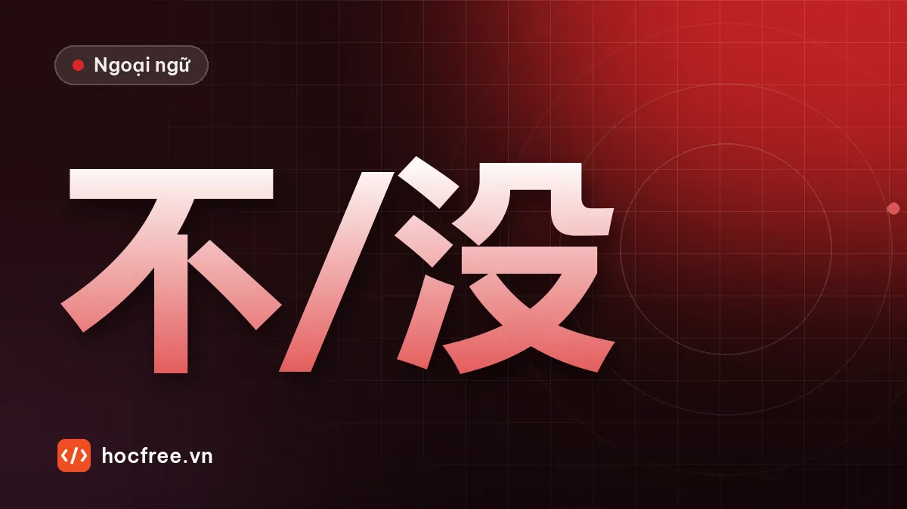

15 cặp từ dễ nhầm trong tiếng Trung sơ cấp: 不/没, 二/两, 再/又
Bảng so sánh các cặp hay nhầm của người Việt: 不 và 没, 二 và 两, 会 – 能 – 可以, 再 và 又, 的 – 得 – 地, 有点儿 và 一点儿, kèm 20 câu luyện tập.

Học xong bài này, bạn sẽ
- Phân biệt các cặp từ dễ nhầm
- Tự sửa lỗi điển hình của người Việt
- Chuẩn bị cho bài kiểm tra HSK 2
Nên học trước: Gọi điện và hẹn gặp
Nội dung bài viết
Sau 15 tuần, bạn đã có khoảng 500 từ và phần lớn ngữ pháp sơ cấp. Đây là lúc lỗi sai bắt đầu "đóng băng" nếu không sửa. Bài này gom 15 cặp từ và cấu trúc người Việt hay nhầm nhất đến trình độ HSK 2, mỗi cặp có quy tắc ngắn và ví dụ đối chiếu, rồi luyện 20 câu.
15 cặp dễ nhầm
| Cặp | Quy tắc | Ví dụ |
|---|---|---|
| 不 / 没 | 不: hiện tại, tương lai, thói quen, ý muốn. 没: quá khứ, "chưa", và phủ định của 有 | 我明天不去。昨天我没去。我没有钱。 |
| 二 / 两 | 两 trước lượng từ, 百, 千; 二 khi đếm, số thứ tự, hàng chục, đơn vị | 两个人, 第二, 十二 |
| 会 / 能 / 可以 | 会: kỹ năng học được. 能: khả năng, điều kiện. 可以: được phép | 我会开车，今天喝酒了不能开车。这儿可以停车吗？ |
| 想 / 要 | 想: mong muốn nhẹ. 要: dứt khoát, cần. Phủ định cả hai là 不想; 不要 = đừng | 我不想去。不要抽烟！ |
| 再 / 又 | 再: lặp lại ở tương lai. 又: lặp lại đã xảy ra | 明天再来。他昨天又迟到了。 |
| 的 / 得 / 地 | 的 trước danh từ; 得 sau động từ, trước đánh giá; 地 trước động từ | 我的书；说得好；认真地学 |
| 有点儿 / 一点儿 | 有点儿 + adj (đứng trước, không vừa ý). adj + 一点儿 (đứng sau, so sánh, đề nghị) | 有点儿贵；便宜一点儿 |
| 几 / 多少 | 几: số nhỏ, cần lượng từ. 多少: số bất kỳ, số điện thoại, giá | 几个人？多少钱？ |
| 次 / 遍 | 次: số lần xảy ra. 遍: một lượt trọn vẹn | 去过两次；再说一遍 |
| 在 / 有 | Vật đã biết + 在 + nơi. Nơi + 有 + vật mới | 我的书在桌子上。桌子上有一本书。 |
| 离 / 从 | 离: khoảng cách. 从: điểm bắt đầu | 我家离公司很近。从八点开始。 |
| 了 / 过 | 了: đã xong (một lần cụ thể). 过: từng trải qua. Phủ định: 没V / 没V过 | 他去北京了。他去过北京。 |
| 知道 / 认识 | 知道: biết một thông tin. 认识: quen biết người, nhận ra chữ | 我知道他的名字。我认识他。 |
| 说 / 告诉 | 告诉 + người + việc. 说 không nhận người làm tân ngữ trực tiếp (dùng 跟…说) | 他告诉我明天开会。他跟我说明天开会。 |
| 刚 / 刚才 | 刚: phó từ "vừa mới", đứng sau chủ ngữ. 刚才: danh từ "lúc nãy", đứng trước/sau chủ ngữ | 我刚到。刚才你去哪儿了？ |
Giải thích thêm ba cặp khó nhất
不 và 没
Hãy hỏi: việc này là ý muốn / thói quen / tương lai hay là sự thật đã (không) xảy ra?
- 他不吃肉。 Anh ấy không ăn thịt (thói quen, ăn chay).
- 他没吃肉。 Anh ấy đã không ăn thịt (bữa đó).
- 明天我不来。 Mai tôi không đến (ý định).
- 昨天我没来。 Hôm qua tôi không đến (sự thật).
Ngoại lệ: tính từ trong quá khứ vẫn dùng 不: 昨天不冷。 是 trong quá khứ dùng 不: 他以前不是经理。
再 và 又
- 你明天再来吧。 Mai bạn lại đến nhé (chưa xảy ra).
- 他今天又来了。 Hôm nay anh ấy lại đến (đã xảy ra, thường kèm 了).
- 请再说一遍。 Xin nói lại (yêu cầu, tương lai).
知道 và 认识
- 我知道这个餐厅在哪儿。 Tôi biết nhà hàng này ở đâu (thông tin).
- 我认识这个餐厅的老板。 Tôi quen ông chủ nhà hàng này (người).
- 你认识这个字吗？ Bạn biết chữ này không (nhận ra mặt chữ)?
Luyện tập 20 câu
1. 我昨天___去上班。 (不 / 没)
2. 他___喝酒，他身体不好。 (不 / 没)
3. 我有___个哥哥。 (二 / 两)
4. 你___说英语吗？ (会 / 可以)
5. 对不起，这儿不___抽烟。 (会 / 能)
6. 我今天太累了，不___去。 (想 / 要)
7. 他上个星期迟到了，今天___迟到了。 (再 / 又)
8. 我没听清楚，请___说一遍。 (再 / 又)
9. 他跑___很快。 (的 / 得 / 地)
10. 她高兴___笑了。 (的 / 得 / 地)
11. 这件衣服___贵。 (有点儿 / 一点儿)
12. 能便宜___吗？ (有点儿 / 一点儿)
13. 你的手机号是___？ (几 / 多少)
14. 这个电影我看了三___。 (次 / 遍)
15. 你的手机___桌子上。 (在 / 有)
16. 公司___机场三十公里。 (离 / 从)
17. 我___过长城，很有意思。 (爬了 / 爬)
18. 你___王经理吗？我介绍一下。 (知道 / 认识)
19. 请你___他，明天不用来了。 (说 / 告诉)
20. 我___到公司，还没吃早饭。 (刚 / 刚才)
Xem đáp án và giải thích
- 没 – sự thật đã xảy ra.
- 不 – thói quen, lựa chọn.
- 两 – trước lượng từ.
- 会 – kỹ năng.
- 能 – không được phép (不能 dùng tự nhiên hơn 不可以 trong biển báo, lời nhắc).
- 想 – phủ định của "muốn".
- 又 – lặp lại đã xảy ra.
- 再 – yêu cầu lặp lại.
- 得 – sau động từ, đánh giá.
- 地 – trước động từ, cách làm.
- 有点儿 – trước tính từ, không vừa ý.
- 一点儿 – sau tính từ, đề nghị.
- 多少 – số điện thoại.
- 遍 – xem trọn một lượt.
- 在 – vật đã biết.
- 离 – khoảng cách.
- 爬 – 爬过: 过 đứng ngay sau động từ.
- 认识 – quen người.
- 告诉 – có người nhận tin trực tiếp.
- 刚 – phó từ sau chủ ngữ.
Kiểm tra cuối bài
1. 再 và 又 khác nhau ở điểm nào?
2. Vì sao 我说他明天开会 không diễn đạt được "tôi bảo anh ấy mai họp"?
Xem đáp án
- 再: lặp lại trong tương lai; 又: lặp lại đã xảy ra.
- Câu này nghĩa là "tôi nói rằng anh ấy mai họp". Muốn nói với ai thì dùng 我告诉他明天开会 hoặc 我跟他说明天开会.
Tổng kết và ôn tập
- Mỗi cặp có một câu hỏi để chọn: ý muốn hay sự thật? tương lai hay đã xảy ra? trước hay sau tính từ?
- Viết mỗi cặp 2 câu của riêng bạn và đưa vào Anki dạng điền trống.
Bài tiếp theo: bài kiểm tra cuối giai đoạn HSK 2.
Từ mới trong bài: 迟到 chídào (đến muộn), 介绍 jièshào (giới thiệu), 餐厅 cāntīng (nhà hàng), 老板 lǎobǎn (ông chủ).
Bài tập thực hành
- Làm 20 câu chọn từ trong phần luyện tập, giải thích từng câu sai.
- Viết mỗi cặp từ 2 câu ví dụ của riêng bạn.
Làm xong bài tập mới chuyển sang bài tiếp theo: đọc to, tự viết chữ Hán và tự chấm đáp án là cách duy nhất để nhớ lâu.